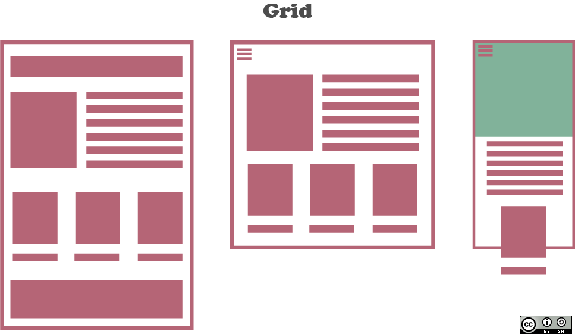

Etiquetas Semanticas
HTML5 incorpora nuevas etiquetas pensadas para hacer que la estructura de la pagina web sea mas logica y funcional, antes de HTML5, la estructura de una pagina se basaba fundamentalmente en etiquetas, generalmente asociadas a una clase o a un id

CSS Grid
Aplicación CSS Grid Layout para el desarrollo de sitios web Para implementar diseños de cuadrícula en sitios web, se han utilizado elementos que aún no están pensados para este propósito. Por esta razón, el World Wide Web Consortium ha desarrollado un estándar para la introducción de diseños de cuadrícula en sitios web: el diseño de cuadrícula CSS. Según Liepiņš, M. (2018). CSS Grid Layout pielietošana tīmekļa vietnes izstrādē.
